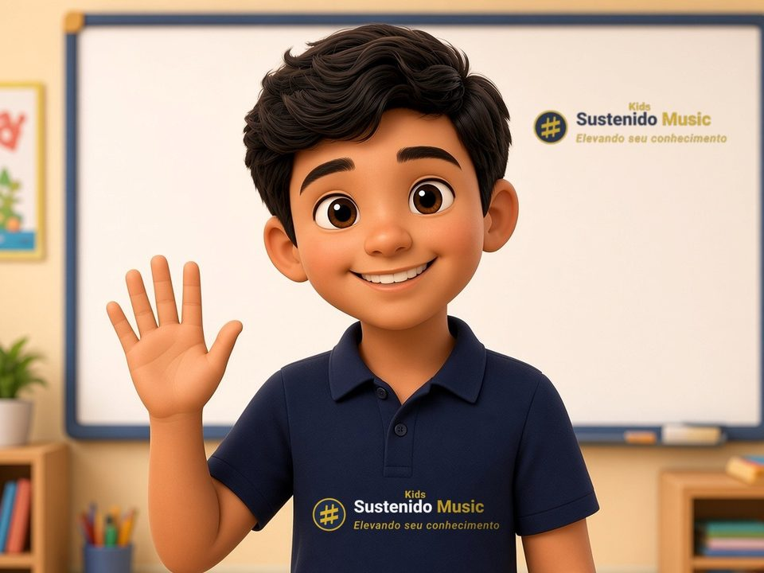

Aula 1
O que é música

NidoOi! Eu sou o Nido! 👋
Hoje a gente vai descobrir o que é música!
Hoje a gente vai descobrir o que é música!
🎵 O que é música?

NidoMúsica é arrumar os sons 🔊 e os silêncios 🤫, um depois do outro, no tempo certinho!
Arrumado 😊
Bagunçado 😵
🤫 O silêncio também é música!
é a pausa: o som descansa👂 O som é o que a gente estuda
NidoO som anda pelo ar como uma onda 🌊 até a nossa orelha! 👂
A música tem 3 partes
Nido🎤 Melodia: a gente canta.
🤝 Harmonia: notas juntinhas.
🥁 Ritmo: o balanço!
🤝 Harmonia: notas juntinhas.
🥁 Ritmo: o balanço!
Os jeitos do som
NidoTodo som tem 4 jeitos. Toque e compare!
Grave ou agudo?
grosso 🐻 · fino 🐤Curto ou longo?
pulinho 🐇 · compridão 🐍Fraco ou forte?
baixinho 🐭 · forte 🦁Timbre: a voz do instrumento
⭐ Resumo do Nido
🎤Melodia = notas uma depois da outra
🤝Harmonia = notas juntas
🥁Ritmo = o tempo e o balanço
🎮 Jogo das estrelas
🏠 Brinque em casa
🤫Fique 1 minutinho em silêncio. Que sons você ouviu? Era grave ou agudo?
🎤Cante um louvor que você conhece: essa é a melodia!
👏Agora bata palmas no balanço dele: esse é o ritmo!
🐻🐤Fale grosso e fino, baixinho e forte!